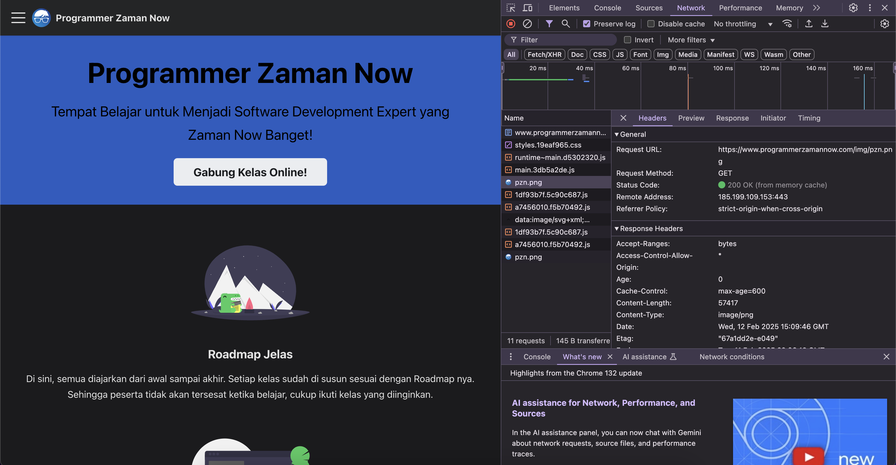

Browser Network Tool
- Untuk lebih mempermudah melihat apa yang dilakukan dibelakang Web Browser, biasanya Web Browser memiliki fitur Network Tool
- Contohnya di browser seperti Google Chrome dan Firefox sudah memiliki Network Tool
- Dengan Network Tool, kita bisa melihat semua detail HTTP Request dan HTTP Response yang dilakukan oleh Client dan Server
Tugas
-
Buka website
https://www.programmerzamannow.com
- Lalu lihat informasi HTTP Request dan HTTP Response yang terjadi menggunakan Network Tool yang terdapat di Web Browser yang kita gunakan
Hasil

Back ||
Next